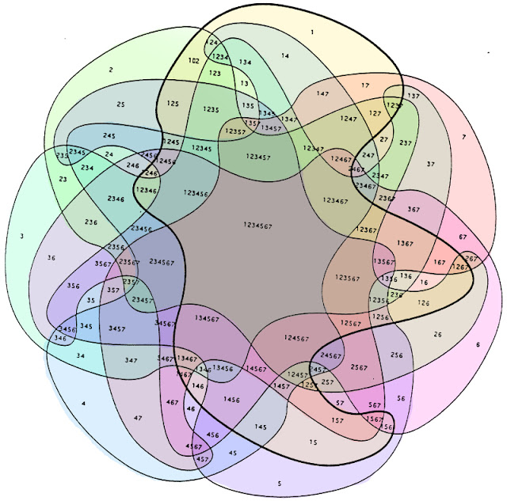
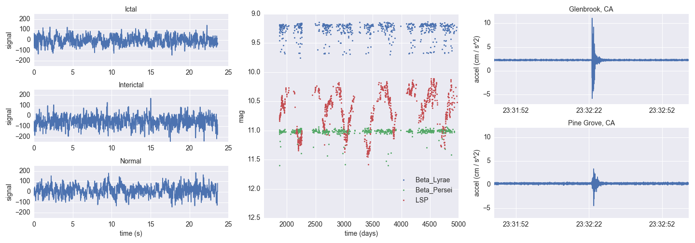
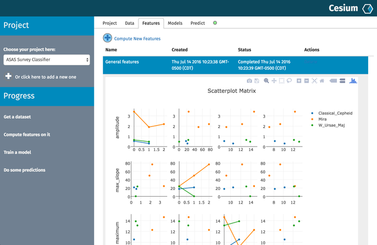
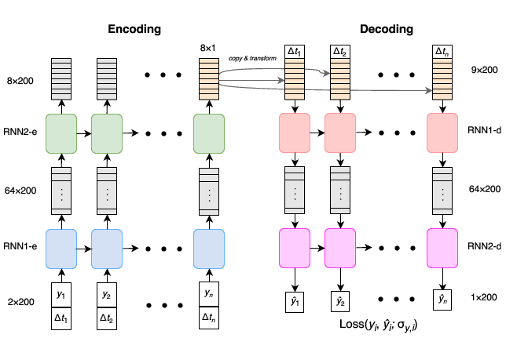
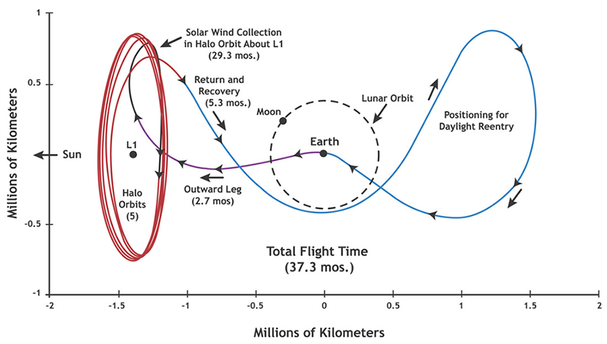
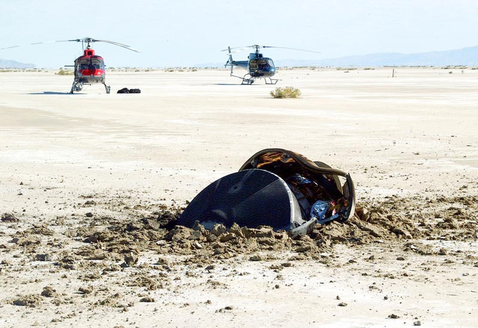
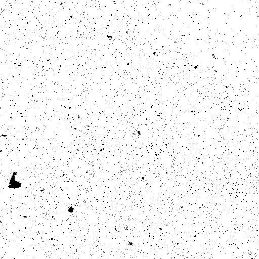
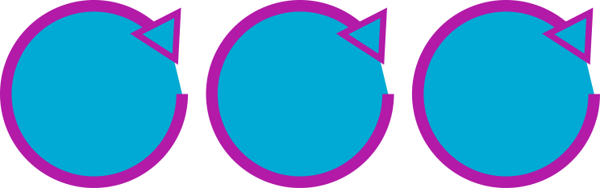

At the intersection of domain science, computation, and engineering
Stéfan van der Walt (stefanv@berkeley.edu)
09/2017, BIDS
A Short History of Data Science

Early Rumblings
Tukey, John W.
The Future of Data Analysis
The Annals of Mathematical Statistics, vol. 33, no. 1, 1962, pp. 1–67.
All in all, I have come to feel that my central interest is in data analysis, which I take to include, among other things: procedures for analyzing data, techniques for interpreting the results of such procedures, ways of planning the gathering of data to make its analysis easier, more precise or more accurate, and all the machinery and results of (mathematical) statistics which apply to analyzing data.
Tukey: The Future of Data Analysis
Work on new problems:
How is novelty most likely to begin and grow? Not through work on familiar problems, in terms of familiar frameworks, and starting with the results of applying familiar processes to the observations. Some or all of these familiar constraints must be given up in each piece of work which may contribute novelty. We should seek out wholly new questions to be answered. This is likely to require a concern with more complexly organized data, though there will be exceptions, as when we are insightful enough to ask new, useful kinds of questions about familiar sorts of data.
Tukey: The Future of Data Analysis
[Data Analysis is] defined by a ubiquitous problem rather than by a concrete subject.
Data analysis, and the parts of statistics which adhere to it, must then take on the characteristics of a science rather than those of mathematics, specifically:
(bl) Data analysis must seek for scope and usefulness rather than security.
(b2) Data analysis must be willing to err moderately often in order that inadequate evidence shall more often suggest the right answer.
(b3) Data analysis must use mathematical argument and mathematical results as bases for judgment rather than as bases for proof or stamps of validity.
Elsewhere: Benzécri, De Leeuw, & others
In the 1960s two currents of research emerged in the spirit of Tukey’s exploratory data analysis: the French school and the Dutch school. Researchers in these schools were outliers in the statistical landscape of the time, in which most research was performed in the framework of probability models. […] many of the modern arguments about data sciences, machine learning, statistics, and inference (see for instance the ASA statement on p-values in Wasserstein and Lazar, 2016) were already debated.
— François Husson, Julie Josse, Gilbert Saporta
Jan de Leeuw and the French School of Data Analysis
Journal of Statistical Software, Vol 73 (2016), Issue 6.
10.18637/jss.v073.i06
Partial Timeline
| 1962 | Tukey, "The Future of Data Analysis" |
|
1973 |
Benzécri, "Data Analysis (L’analyze des données)"; "The models should follow the data." |
|
1974 |
Peter Naur, "Concise Survey of Computer Methods"; "Datalogy: the science of data and of data processes and its place in education" |
Partial Timeline (cont'd)
|
2001 |
William Cleveland, "Data Science: An Action Plan for Expanding the Technical Areas of the Field of Statistics". A plan "to enlarge the major areas of technical work of the field of statistics. [...] the altered field will be called ‘data science.’" Proposes 6 technical focus areas for a university data science department: 1. Multidisciplinary Investigations 2. Models and Methods for Data 3. Computing with Data 4. Pedagogy 5. Tool Evaluation 6. Theory |
| 2001 | Leo Breiman, "Statistical Modeling: The Two Cultures" |
|
2004 |
Ben Fry, dissertation: "Computation Information Design" 1. Computer Science – acquire and parse data 2. Mathematics, Statistics, & Data Mining – filter and mine 3. Graphic Design – represent and refine 4. Infovis and Human-Computer Interaction (HCI) – interaction |
|
2009 |
Hal Varian (Google Chief Economist): "The ability to take data—to be able to understand it, to process it, to extract value from it, to visualize it, to communicate it—that’s going to be a hugely important skill in the next decades…" |
In Defining DS, Exclusion Brings Us to {}
data_science - stats - signal_processing - applied_maths - computer_science - η = ∅ ?

At the Edge of Data
Bombe from The Imitation Game
At the Edge of Processing Complexity
Los Alamos From Below
Richard Feynman, Santa Barbara, February 6, 1975
What is New?
scope
Beyond Exclusion: Primary Intent
What is the story you want to tell?
What I Work On
Elegant SciPy
Elegant SciPy
Also available online at
github.com/elegant-scipy/elegant-scipy
Notebooks at
github.com/elegant-scipy/notebooks
Elegant SciPy
Chapter 7: optimization & registration notebook
Cesium-ML

Cesium-ML

Cesium-ML

Genesis

Genesis

Genesis

SkyPortal
Demo
Note: BaseLayer
Focused Collaborative Scientific Iteration
I know, catchy ;)
